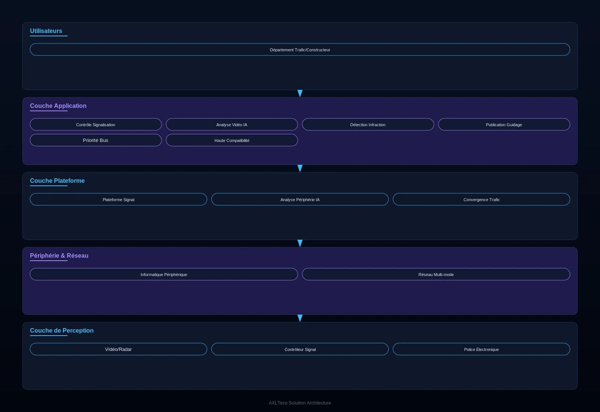

Pour les services de gestion du trafic urbain et les maîtres d'ouvrage d'infrastructures de transport, une solution intelligente couvrant régulation des feux, vidéosurveillance, détection des infractions, analyse des flux et publication de guidage, qui répond aux points de douleur clés que sont la congestion sévère des carrefours, la fréquence des infractions et la sous-utilisation des données, améliorant la capacité routière et la sécurité.
Vue d'ensemble
Fournit aux services de gestion du trafic urbain et aux maîtres d'ouvrage une solution intelligente couvrant régulation des feux, vidéosurveillance, détection des infractions, analyse des flux et publication de guidage, répondant à la congestion, aux infractions fréquentes et aux données sous-exploitées, et améliorant capacité routière et sécurité.
Applicable à : Services de gestion du trafic urbain, maîtres d'ouvrage d'infrastructures de transport, exploitants autoroutiers.
- Compatible avec les principales marques de contrôleurs de feux nationales et internationales, protégeant les investissements
- L'analyse vidéo IA évite de découper la chaussée pour poser des boucles, chantiers courts
- Interfaces de données ouvertes vers les centres de commandement du trafic et les fournisseurs de cartes
- A participé aux projets Mile 2 de Lagos, ligne bleue du tramway et gare de Kano
Bénéfices : Capacité routière accrue, accidents réduits, services de transport en commun améliorés.
Défis Métier
Dans la gestion du trafic urbain, les clients font souvent face à une congestion chronique des carrefours, des infractions fréquentes et des services de transport public faibles ; ils ont besoin d'une solution multi-scénarios pilotée par la donnée, compatible avec les infrastructures de signalisation existantes.
Congestion sévère aux carrefours
Des plans de feux fixes ne s'adaptent pas aux flux changeants ; les files s'étirent aux heures de pointe.
Infractions fréquentes
Feux rouges brûlés, excès de vitesse et contresens dépendent d'un contrôle manuel à la couverture limitée.
Données de trafic dormantes
Les données de flux aux carrefours restent inexploitées, privant les décisions d'optimisation de support.
Transport public faible
Les bus ne bénéficient d'aucune priorité, arrivent en retard et offrent une expérience passager médiocre.
Compatibilité avec l'existant
Les principales marques de contrôleurs de feux doivent être prises en charge pour préserver les investissements.
Interfaces de données ouvertes
Des interfaces ouvertes sont nécessaires pour les centres de commandement et les fournisseurs de cartes.
Scénarios typiques :
Rôles concernés : Ingénieurs trafic, commandants de police routière, équipes d'entretien des voiries.
Architecture
Conçue sur une architecture à trois niveaux « perception des carrefours – coordination de secteur – contrôle central » couvrant signalisation, vidéosurveillance, détection d'infractions, analyse des flux et diffusion de guidage, compatible avec les principales marques de contrôleurs de feux et ouverte aux centres de commandement.

Les carrefours perçoivent flux et infractions en temps réel ; les tronçons publient le guidage et accordent la priorité bus ; le centre agrège l'état des carrefours pour la coordination de secteur et le pilotage à distance.
Modules clés
Contrôle de la signalisation
Compatible avec les principales marques de contrôleurs de feux nationales et internationales, avec réglage des plans à distance.
Analyse vidéo IA
Détection de flux et d'infractions sans boucle de voirie — des chantiers courts.
Détection d'infractions
Capture et preuve automatiques des feux rouges brûlés, excès de vitesse et contresens.
Diffusion de guidage
Infos routières publiées en temps réel via écrans de guidage et interfaces ouvertes.
Priorité bus
La détection des bus allonge automatiquement le vert, améliorant la ponctualité.
Capacités d'intégration :
- Compatible avec les principales marques de contrôleurs de feux nationales et internationales
- L'analyse vidéo IA ne nécessite aucune boucle de voirie
- Interfaces de données ouvertes pour les centres de commandement du trafic et les fournisseurs de cartes
Avantages & Livraison
Avec l'analyse vidéo IA et la compatibilité multi-marques, nous livrons aux villes une capacité routière accrue et une aide à la décision fondée sur la donnée, via des levés de site, le réglage des feux et des services d'optimisation continue.
Avantages différenciants
Forte compatibilité
Fonctionne avec les principales marques de contrôleurs de feux, en préservant les investissements existants.
Chantiers rapides et non invasifs
L'analyse IA ne nécessite aucune boucle de voirie — chantier court, maintenance économique.
Données ouvertes
Des interfaces ouvertes se relient aux centres de commandement et aux fournisseurs de cartes.
Références d'ingénierie
Participation à l'échangeur de transport de Mile 2 à Lagos, à la phase V de la ligne bleue du tramway de Lagos et au chantier de la gare de Kano.
Valeur client : Capacité routière accrue, moins d'accidents, meilleurs services de transport public et socle de données pour les décisions de trafic urbain.
Processus de mise en œuvre
Étude des besoins
Cartographier l'état des carrefours et les objectifs de gestion.
Levé de site
Localiser les points de détection, de signalisation et de guidage.
Installation des équipements
Poser détecteurs, contrôleurs de feux et écrans de guidage.
Déploiement de la plateforme
Déployer et configurer la plateforme de contrôle des feux.
Réglage des plans de feux
Optimiser les plans horaires à partir des données de flux.
Formation & passation
Former les équipes de gestion et démarrer.
Garanties de service : Garantie d'un an, optimisation continue des plans de feux, support technique à distance.
Études de Cas
Les projets suivants ont forgé l'expérience d'ingénierie des transports qui sous-tend cette solution.
Échangeur de transport de Mile 2 à Lagos
Contexte : Le projet de construction de l'échangeur de transport de Mile 2 à Lagos, au Nigéria.
Défi : Le site traite un trafic dense et complexe et exige des systèmes intelligents intégrés.
Solution : Participation à la construction des systèmes en courants faibles et intelligents.
Résultats : Systèmes intelligents livrés sur l'échangeur, ajoutant une expérience d'ingénierie de transport à grande échelle.
Phase V de la ligne bleue du tramway de Lagos
Contexte : Le projet de la phase V de la ligne bleue du tramway de Lagos, au Nigéria.
Défi : Les projets ferroviaires mobilisent de nombreux sous-systèmes intelligents complexes, aux exigences d'intégration élevées.
Solution : Participation à la construction des systèmes en courants faibles et intelligents.
Résultats : Livraison dans les délais, prolongeant les références ferroviaires urbaines de l'entreprise.
Gare de Kano
Contexte : Le projet de construction de la gare de Kano, au Nigéria.
Défi : La gare concentre flux de voyageurs et de véhicules et exige une gestion intelligente globale.
Solution : Participation à la construction des systèmes en courants faibles et intelligents.
Résultats : Systèmes livrés, établissant une capacité de mise en œuvre sur les pôles de transport.